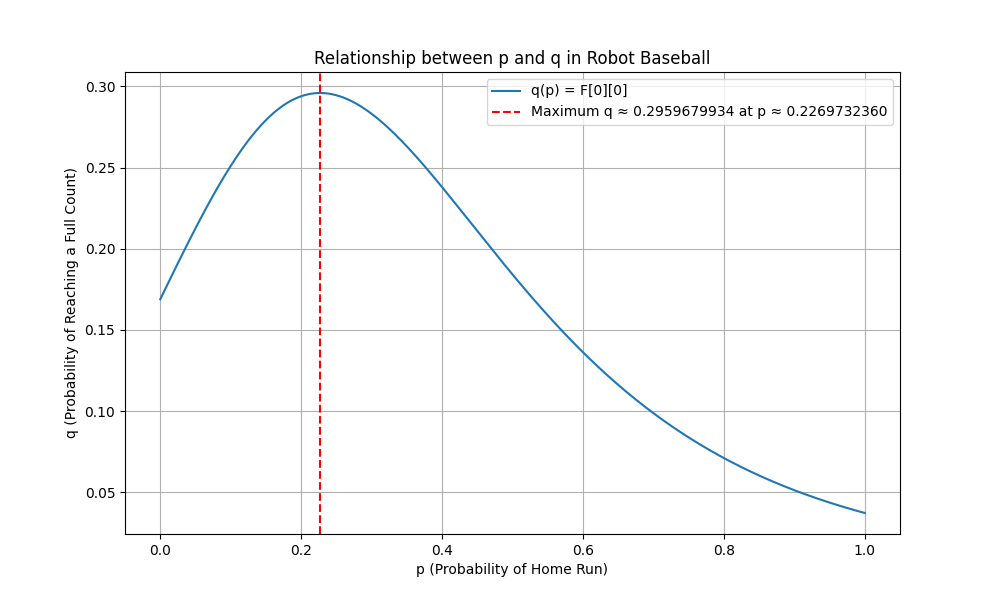

Lately I've been wanting to get back into solving the monthly Jane Street puzzles. Back in the Summer of 2024 I solved a few of them, but I've been busy with other things since then. With a little more free time this semester, I decided to tackle the October 2025 puzzle, Robot Baseball. The problem statement is as follows:
The Artificial Automaton Athletics Association (Quad-A) is at it again, to compete with postseason baseball they are developing a Robot Baseball competition. Games are composed of a series of independent at-bats in which the batter is trying to maximize expected score and the pitcher is trying to minimize expected score.
An at-bat is a series of pitches with a running count of balls and strikes, both starting at zero. For each pitch, the pitcher decides whether to throw a ball or strike, and the batter decides whether to wait or swing; these decisions are made secretly and simultaneously. The results of these choices are as follows.
- If the pitcher throws a ball and the batter waits, the count of balls is incremented by 1.
- If the pitcher throws a strike and the batter waits, the count of strikes is incremented by 1.
- If the pitcher throws a ball and the batter swings, the count of strikes is incremented by 1.
- If the pitcher throws a strike and the batter swings, with probability \( p \) the batter hits a home run and with probability \( 1-p \) and the count of strikes is incremented by 1.
An at-bat ends when either:
- The count of balls reaches 4, in which case the batter receives 1 point.
- The count of strikes reaches 3, in which case the batter receives 0 points.
- The batter hits a home run, in which case the batter receives 4 points.
By varying the size of the strike zone, Quad-A can adjust the value \( p \), the probability a pitched strike that is swung at results in a home run. They have found that viewers are most excited by at-bats that reach a full count, that is, the at-bats that reach the state of three balls and two strikes. Let \( q \) be the probability of at-bats reaching full count; \( q \) is dependent on \( p \). Assume the batter and pitcher are both using optimal mixed strategies and Quad-A has chosen the \( p \) that maximizes \( q \). Find this \( q \), the maximal probability at-bats reach full count, to ten decimal places.
At first glance, this problem appeared slightly different from other problems I was accustomed to, like filling in a grid, finding some probability geometrically, or solving some cryptic riddle. This is the first puzzle I encountered that involved game theory. The only game theory knowledge I picked up was from AP Microeconomics in high school, but that information has long left my brain. The only thing I knew was that making a 2x2 payoff matrix would probably be useful.
Let \( P(b,s) \) be the expected points for the batter after \( b \) balls and \( s \) strikes. I'm calling this function \( P \) because it stands for "points".
Let's replace these values with variables for simplicity:
According to these lecture notes, the value of the game (expected payoff for the row player if both players play optimally) is given by
Ok great, we have some more information. Since our payoff matrix entries are the batter's expected points, we can construct a recurrence that gives the batter's expected value \( P(b,s) \) at each count \( (b,s) \) under optimal play by both sides.
Let's break down this recurrence. At 4 balls, the batter earns 1 point for a walk, and at 3 strikes, the batter earns 0 points for an out, and for other counts, the values of \( P(b,s) \) can be computed backwards from \( P(4,3) \) using the formula we just derived.
From the same lecture notes, the optimal probability for the row player to play Row 1 (pitcher throws a ball) is given by
Let us call this probability \( A(b,s) \), the pitcher's probability of throwing a ball after \( b \) balls and \( s \) strikes. I chose the letter \( A \) since I thought of "Event \( A \)" being the event that the pitcher throws a ball.
The optimal probability for the row player to play Row 2 (pitcher throws a strike) is given by
\[ \mathrm{Pr[Strike]} = 1 - A(b,s) \]
The optimal probability for the column player to play Column 1 (batter waits) is given by
\[ \mathrm{Pr[Wait]} = \frac{d-b}{a-b-c+d} = \frac{d-c}{a-b-c+d} = A(b,s) \]
since \( b = c = P(b,s+1) \).
The optimal probability for the column player to play Column 2 (batter swings) is given by
\[ \mathrm{Pr[Swing]} = 1 - A(b,s) \]
Therefore, \( \mathrm{Pr}[\text{Ball}] = \mathrm{Pr}[\text{Wait}] = A(b,s) \) and \( \mathrm{Pr}[\text{Strike}] = \mathrm{Pr}[\text{Swing}] = 1 - A(b,s) \). All of these probabilities can be written in terms of \( A(b,s) \), whose recurrence is summarized as follows:
This recurrence is a bit simpler than the one for \( P(b,s) \). If we get 4 balls or 3 strikes, the at-bat ends, so the probability the pitcher now throws a ball is 0 in these cases. Otherwise, we can just use our formula for \( A(b,s) \) and work backwards from \( A(4, 0 \ldots 2) \) and \( A(0 \ldots 3, 3) \) to compute all values of \( A(b,s) \).
Now we have enough information to compute the probability of reaching any state in the game with \( b \) balls and \( s \) strikes! We can summarize it cleanly in the following table:
| Pitcher (probability) | Batter (probability) | New State | Probability |
|---|---|---|---|
| Ball (\( A \)) | Wait (\( A \)) | \( (b+1, s) \) | \( A^2 \) |
| Ball (\( A \)) | Swing (\( 1-A \)) | \( (b, s+1) \) | \( A(1-A) \) |
| Strike (\( 1-A \)) | Wait (\( A \)) | \( (b, s+1) \) | \( (1-A)A \) |
| Strike (\( 1-A \)) | Swing (\( 1-A \)) | \( (b, s+1) \) with probability \( (1-p) \) | \( (1-A)^2 (1-p) \) |
Note that the case where the pitcher throws a strike and the batter swings and hits a home run (with total probability \( (1-A)^2 p \)) is excluded since the at-bat ends. If we hit a home run early, we'll never reach a full count!
Let \( F(b,s) \) be the probability, starting from the state with \( b \) balls and \( s \) strikes of reaching a full count (remember: 3 balls and 2 strikes) before the at-bat ends. The letter \( F \) stands for "full count." The recurrence for \( F(b,s) \) is given by
This is our final recurrence. It might look intimidating, but it's really not that bad. Let's break it down. If we get 4 balls or 3 strikes, the at-bat ends, so the probability of reaching a full count is 0 in these cases. If we already have a full count (3 balls and 2 strikes), then the probability of reaching a full count is 1. Otherwise, we can use our table above to compute \( F(b,s) \) in terms of \( F(b+1,s) \) and \( F(b,s+1) \). The first term in the core of our recurrence is \( (A(b, s))^2 F(b+1, s) \), which is multiplying the probability of the pitcher throwing a ball \( (A(b, s)) \), the batter waiting \( (A(b, s)) \), and the probability of reaching a full count from the new state \( (b+1, s) \). The second term is the sum of the first two ways we can get to the state \( (b, s+1) \), which have the same probability given in the table. The third term is the case where the pitcher throws a strike and the batter swings and misses, so we multiply by the probability of missing, \( (1-p) \).
The last step is to find the value of \( p \) that maximizes \( F(0,0) \), the probability of reaching a full count when starting from 0 balls and 0 strikes. This maximum value is \( q \).
Using golden-section search, we can find the optimal \( p \) in the interval $[0,1]$ that maximizes \( q \), assuming \( F(0,0) \) for each \( p \) is unimodal. The function we choose for the search will ultimately be a function of \( p \) because given \( p \), we can compute all values of \( P(b,s) \), \( A(b,s) \), and then \( F(b,s) \). Each of these tables can be computed with dynamic programming by working backwards from the boundary cases and following the recurrences defined above.
Using this Python code, we obtain the following results to 10 decimal places:
- Optimal \( p \): \(~0.2269732360 \)
- Optimal \( q \): \(~0.2959679934 \)
A plot of \( p \) versus \( q \) is shown in the following figure.
\( F(0,0) \) appears to be a unimodal function of \( p \), which is good since golden-section search is designed for unimodal functions.
I think this was a really fun puzzle that combined concepts from game theory, probability, and dynamic programming. I would like to make a post like this for each Jane Street puzzle every month going forward, so stay tuned for more write-ups!